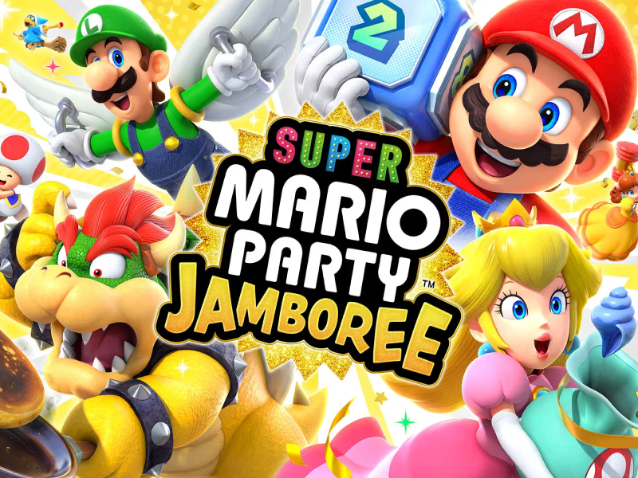

Một game hay cho bốn người cần hạn chế thời gian chờ, luật đủ rõ và tạo cơ hội để mọi thành viên tham gia. Tùy nhóm thích hợp tác hay cạnh tranh, bạn có thể chọn các kiểu trải nghiệm khác nhau.

Game party và mini-game
Mario Party, WarioWare, Rabbids Party và 1-2-Switch phù hợp với nhóm có trình độ không đồng đều. Mỗi vòng sử dụng một luật mới, vì vậy người mới vẫn có cơ hội thắng và không khí ít căng thẳng hơn game đối kháng chuyên sâu.
Game phối hợp tạo tiếng cười
Overcooked, Moving Out 2, Tools Up và PlateUp yêu cầu cả nhóm chia nhiệm vụ. Những sai sót nhỏ thường tạo ra tình huống hài hước, nhưng nhóm nên trao đổi rõ để tránh biến cuộc chơi thành tranh luận. Đây là lựa chọn tốt cho hoạt động gắn kết.
Game cạnh tranh trực tiếp
Mario Kart, Super Smash Bros., bóng đá, tennis và Nintendo Switch Sports phù hợp khi nhóm muốn chia đội. Hãy chọn trận hoặc chặng ngắn để dễ đổi người nếu nhóm đông hơn bốn. Bộ lọc của PlayNest cho phép xem các game hỗ trợ nhóm nhỏ và nhóm đông.
Tìm game phù hợp trước khi đặt phòng
Danh sách PlayNest cho phép lọc theo nền tảng, thể loại, số người chơi và mức độ dễ làm quen.
Câu hỏi thường gặp
Bốn người cần bao nhiêu tay cầm?
Tùy game và nền tảng, thường mỗi người cần một tay cầm hoặc Joy-Con; nên báo số người khi đặt phòng để được chuẩn bị.
Nhóm có người mới nên chọn game nào?
Mario Kart, Nintendo Switch Sports, Mario Party và Overcooked có mục tiêu dễ hiểu, phù hợp nhóm trình độ khác nhau.